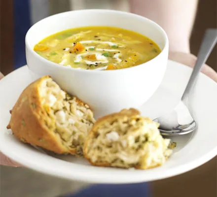

Chicken Soup

Description
Use up leftover chicken in this rustic soup with garlic yogurt. Best
served with cheese scones
Ingredients
- 1 tbsp olive oil
- 2 onions, chopped
- 3 medium carrots, chopped
- 1 tbsp thyme leaves, roughly chopped
- 1.4l chicken stock
- 2300g leftover roast chicken, shredded and skin removed
- 200g frozen peas
- 3 tbsp Greek yogurt
- 1 garlic clove, crushed
- squeeze of lemon juice
- cheese scone, to serve
Steps
Step 1
- Put a large saucepan of water on to boil.
Step 2
-
Finely chop the 100g pancetta, having first removed any rind. Finely
grate 50g pecorino cheese and 50g parmesan and mix them together.
Step 3
-
Beat the 3 large eggs in a medium bowl and season with a little freshly
grated black pepper. Set everything aside.
Step 4
-
Add 1 tsp salt to the boiling water, add 350g spaghetti and when the
water comes back to the boil, cook at a constant simmer, covered, for 10
minutes or until al dente (just cooked).
Step 5
-
Squash 2 peeled plump garlic cloves with the blade of a knife, just to
bruise it.
Step 6
-
While the spaghetti is cooking, fry the pancetta with the garlic. Drop
50g unsalted butter into a large frying pan or wok and, as soon as the
butter has melted, tip in the pancetta and garlic.
Step 7
-
Leave to cook on a medium heat for about 5 minutes, stirring often,
until the pancetta is golden and crisp. The garlic has now imparted its
flavour, so take it out with a slotted spoon and discard.
Step 8
-
Keep the heat under the pancetta on low. When the pasta is ready, lift
it from the water with a pasta fork or tongs and put it in the frying
pan with the pancetta. Don’t worry if a little water drops in the pan as
well (you want this to happen) and don’t throw the pasta water away yet.
Step 9
-
Mix most of the cheese in with the eggs, keeping a small handful back
for sprinkling over later.
Step 10
-
Take the pan of spaghetti and pancetta off the heat. Now quickly pour in
the eggs and cheese. Using the tongs or a long fork, lift up the
spaghetti so it mixes easily with the egg mixture, which thickens but
doesn’t scramble, and everything is coated.
Step 11
-
Add extra pasta cooking water to keep it saucy (several tablespoons
should do it). You don’t want it wet, just moist. Season with a little
salt, if needed.
Step 12
-
Use a long-pronged fork to twist the pasta on to the serving plate or
bowl. Serve immediately with a little sprinkling of the remaining cheese
and a grating of black pepper. If the dish does get a little dry before
serving, splash in some more hot pasta water and the glossy sauciness
will be revived.